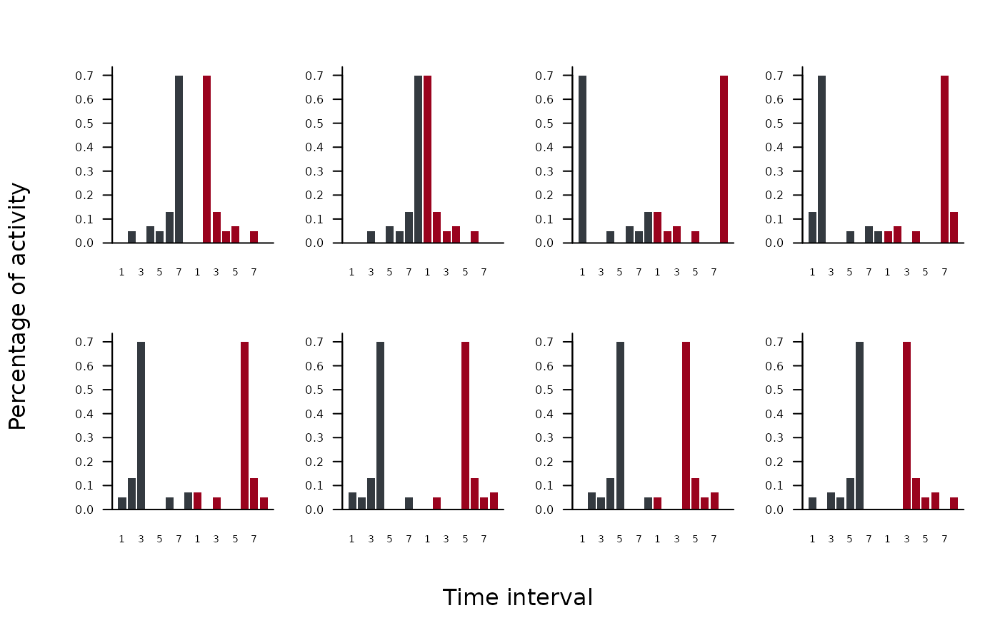

Diagram of ROSARIO null-model randomizations
plot_rosario.RdVisualizes the first 10 hypothetical time use distributions produced by
rosario() for a single biological identity. Each panel displays one
hypothetical time use distribution with its cyclic shift shown in dark gray
and its mirror image shown in dark red.
Value
Invisibly, a list with:
variants— the original list fromrosario(numvec)mat2k_plotted— matrix of the plotted variants (min(10, n) × 2k)k— number of time binsindices_plotted— which variant indices (1..m) were drawn
Examples
one <- c(0,5,0,7,5,13,70,0)
plot_rosario(one, cols = 4)
